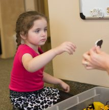

SPEECH - LANGUAGE THERAPY
What is Speech therapy
Speech-language therapy is an intervention service that focuses on improving a
child's speech and their ability to understand and express language, including nonverbal
language. Speech therapists, or speech and language pathologists (SLPs), are the
professionals who work with individual who experience difficulties in speech, language and
communication.
Speech-language therapy includes the following components:
- Coordinating the mouth to produce sounds to form words and sentences (to address
articulation, fluency, and voice volume regulation);
- Understanding and expressing language (to address the use of language through
written, pictorial, body, and sign forms, and the use of language through alternative
communication systems such as social media, computers, and iPads).
- In addition, the role of SLPs in treating swallowing disorders has broadened to include
all aspects of feeding.
Qualifications:
Speech-language therapists currently hold a four year undergraduate degree in
speech-language therapy from a programme accredited by a respective Professional
Board for Speech, Language and Hearing Professions. Exit level outcomes require that
the graduate be able to practice safely, competently and independently. Upon graduation,
speech-language therapists register with a medical/health professional council specific to
the country of practice, complete a year of Community Service and are then eligible for
registration in the category “independent practice”. Demonstration of continued
professional development is required for continued registration with the medical/health
professional council.
Aides/Technicians are individuals who have completed on-the-job training,
workshops, and so forth and work under the direct supervision of certified SpeechLanguage Pathologists.
Services available:
Speech-language therapists provide clinical services that include the following:
- • prevention & identification
- • assessment & evaluation
- • consultation & diagnosis
- • management
- • counselling
- • collaboration
- • documentation
- • referrals
Who needs paediatric speech-language therapy?
Paediatric areas of management include the following delays and disorders
- • Pre-linguistic communication (e.g., joint attention, intentionality, communicative
signalling) Communication intents in the infant prior to verbal language.
- • Articulation and Phonological disorders or delays (speech sound errors e.g. ‘rabbit’
produced as ‘wabbit,' lisps etc).
- • Delays and disorders of speech and language development in the preschool child
including children with Cerebral Palsy, Down Syndrome and Autism , etc.
- • Learning delays or disorders in the school-aged child in all populations including
Attention deficit disorder (ADD) and Attention Deficit Hyperactivity Disorder (ADHD).
- • Fluency disorders (stuttering, cluttering, stammering) from the beginning stutterer to the
more advanced stutterer.
- • Paediatric feeding and swallowing difficulties as well as feeding aversions in children
including those diagnosed with Cerebral palsy, Down syndrome, Autism, etc.
- • Apraxia of speech: impaired motor planning ability to complete sequences for speech
sound production
- • Voice: quality, loudness, pitch, respiration
- •Language (comprehension and expression): difficulty understanding language or using
language to communicate effectively.
- • Pragmatics (social aspects of communication) including eye contact, facial expression,
body language and gestures
- •Literacy (reading, writing, spelling)
- • Executive functions including cognition, attention, memory, sequencing• Orofacial myology (including tongue thrust,
cleft lip & palate)
Does my child need speech-language therapy?
Some children may have excellent pronunciation and may even be early readers, but they
may need speech therapy to improve "pragmatic" language, or the process of using verbal
and body language appropriately in social situations for everyday purposes such as
making requests, having conversations, and making friends. Other reasons children may
need speech therapy include medical conditions such as a brain injury or infection that has
affected their ability to communicate and an identifiable disability such as Down syndrome.
Services often begin at a young age and continue as children enter school and start to
communicate with written language.
View Speech Therapy Photo Gallery
